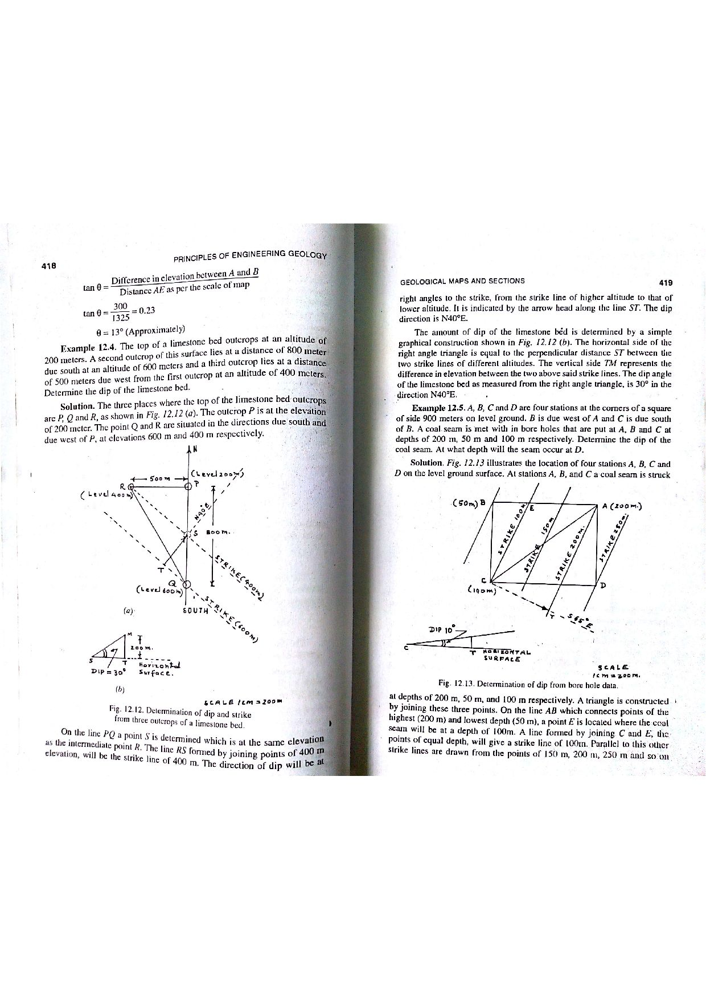

Q131: Vector Data Model: Points, Lines, and Polygons as the Triad of Earth Surface Features
In Geographic Information Systems (GIS), digital cartography, and spatial database management, all discrete geographic features on the Earth's surface are abstracted, modeled, and characterized using three fundamental geometric primitives: Points, Lines (Arcs), and Polygons (Areas) (Chang, 2019; Longley et al., 2015; Bangar, p. 216).

Mathematical & Topological Formalization of Primitives
According to the Open Geospatial Consortium (OGC) Simple Feature Access specification and ISO 19107:
- Point Features (0-Dimensional, $\text{dim} = 0$): Defined mathematically by a single coordinate pair $(X, Y)$ in a specified projected coordinate system (or latitude/longitude in geographic coordinates). A point has zero length, zero width, and zero surface area. Used to represent entities whose spatial extent is negligible at the map scale: Geological examples: exploratory boreholes, water wells, seismic recording stations, mineral sample locations, strike-and-dip measurement points, mine shaft portals.
- Line / Polyline Features (1-Dimensional, $\text{dim} = 1$): Defined mathematically by an ordered sequence of connected coordinate vertices $(X_1, Y_1), (X_2, Y_2), \dots, (X_n, Y_n)$ with distinct starting and ending nodes. A line possesses length and direction, but zero surface area. Geological examples: geological fault traces, thrust planes, anticlinal fold axes, dykes, river streams, contour lines, railway tracks, seismic survey profile lines.
- Polygon Features (2-Dimensional, $\text{dim} = 2$): Defined mathematically by a closed boundary composed of a sequence of lines where the first vertex coincides exactly with the last vertex: $(X_1, Y_1) \equiv (X_n, Y_n)$. A polygon possesses perimeter, perimeter vertices, and enclosed surface area. Geological examples: geological lithological formations, granite batholith outcrops, mining concessions, drainage basins / watersheds, national parks, surface lakes, ore bodies.

Cartographic Generalization and Dimension Transition
The assignment of a geographic entity to a point, line, or polygon primitive is not an inherent static property of the real-world object; it is fundamentally governed by the cartographic map scale (Burrough & McDonnell, 1998):
| Real-World Geographic Entity | Large-Scale Map (e.g. $1 : 1,000$ to $1 : 5,000$) | Medium-Scale Map (e.g. $1 : 50,000$) | Small-Scale Regional Map (e.g. $1 : 1,000,000$) |
|---|---|---|---|
| City / Urban Settlement | Complex mosaic of Polygons (individual building footprints, city blocks). | Single large boundary Polygon. | Single dimensionless Point feature with city center coordinates. |
| River / Estuary System | Double-line Polygon representing open water surface and banks. | Single-line Polyline feature. | Simplified Polyline or omitted entirely if below threshold. |
| Kimberlite Pipe / Mineral Deposit | Detailed oval Polygon outlining contact metamorphic aureole. | Small circular Polygon. | Single Point feature with symbol denoting commodity. |
The Dual Architecture: Spatial Coordinates + Attribute Tables
The power of the vector data model stems from the seamless relational coupling between the geometric primitives and tabular attribute databases:
- Topology: The mathematical language of geometric spatial relationships (adjacency, connectivity, and containment) that remains invariant under rubber-sheeting, rotation, or projection:
- Adjacency / Contiguity: Which rock polygons share a common fault boundary (Polygon Topology).
- Connectivity: How stream line segments connect at river junctions (Arc-Node Topology).
- Containment: Which groundwater monitoring wells fall inside a specific basalt aquifer polygon (Point-in-Polygon).
- Relational Attribute Table: Every single point, line, or polygon carries a unique Feature Identifier ($\text{FID}$ or $\text{ObjectID}$) linked directly to a row in an attribute table storing geological properties (rock type, age, mineral grade, permeability, owner).
- (A) Point feature
- (B) Line feature
- (C) Polygon feature
- (D) All of these
Point features represent zero-dimensional geographic entities characterized by a single $(X, Y)$ coordinate pair (e.g., wells, mine shafts, spot elevations). While points are fundamental primitives, they cannot represent linear networks (faults, streams) or areal expanses (lithological formations, lakes). Selecting only Option (A) is incomplete and incorrect.
Line (or polyline) features represent one-dimensional linear entities characterized by an ordered chain of coordinates with length and direction (e.g., dykes, anticlinal fold hinges, highways). Lines cannot capture point entities or enclosed geographic areas. Selecting only Option (B) is incomplete and incorrect.
Polygon features represent two-dimensional enclosed regions with measurable perimeters and areas (e.g., sedimentary basins, batholiths, mining concessions). Selecting only Option (C) ignores points and lines and is therefore incomplete.
In Geographic Information Systems and vector spatial modeling (Chang, 2019; Bangar, p. 216), Earth's surface features are exhaustively classified into the triad of Points, Lines, and Polygons:
- Points represent discrete location-based entities ($0\text{D}$).
- Lines represent linear, directional, and networked entities ($1\text{D}$).
- Polygons represent contiguous, enclosed surface territories ($2\text{D}$).
Therefore, Option (D) encompasses the complete foundational geometry of GIS vector data modeling.
| Geometric Primitive | Topological Dimension | Coordinate Structure | Geometric Attributes | Representative Geological Examples |
|---|---|---|---|---|
| Point Feature | 0-Dimensional ($\text{dim} = 0$) | Single coordinate pair: $[X, Y]$ | Location coordinates $(X, Y, Z)$; zero length, zero area. | Exploratory boreholes, water wells, earthquake epicenters, mineral sample sites, mine adits. |
| Line / Polyline Feature | 1-Dimensional ($\text{dim} = 1$) | Ordered sequence of vertices: $[X_1, Y_1] \rightarrow [X_n, Y_n]$ | Length, direction, sinuosity, flow orientation; zero area. | Geological faults, thrust contacts, fold hinge traces, dolerite dykes, contour lines, seismic reflection profiles. |
| Polygon / Area Feature | 2-Dimensional ($\text{dim} = 2$) | Closed loop where start equals end: $[X_1, Y_1] \equiv [X_n, Y_n]$ | Enclosed surface area, perimeter, centroid coordinates $(X_c, Y_c)$. | Stratigraphic lithologies, granite plutons, mining leases, alluvial floodplains, groundwater basins. |
A geological fault trace is digitized as a 2D vector polyline with four consecutive vertices in a projected UTM coordinate system (coordinates in meters): $$V_1 = (450000, 2430000), \quad V_2 = (453000, 2434000), \quad V_3 = (456000, 2438000), \quad V_4 = (460000, 2441000)$$ Calculate the total ground length of the fault trace in kilometers.
1. Calculate Euclidean length for each segment ($\Delta L_i = \sqrt{\Delta X_i^2 + \Delta Y_i^2}$): $$\text{Segment 1-2: } \Delta X = 453000 - 450000 = 3000\text{ m}, \quad \Delta Y = 2434000 - 2430000 = 4000\text{ m}$$ $$L_{12} = \sqrt{3000^2 + 4000^2} = \sqrt{9,000,000 + 16,000,000} = \sqrt{25,000,000} = 5000\text{ m}$$ $$\text{Segment 2-3: } \Delta X = 456000 - 453000 = 3000\text{ m}, \quad \Delta Y = 2438000 - 2434000 = 4000\text{ m}$$ $$L_{23} = \sqrt{3000^2 + 4000^2} = 5000\text{ m}$$ $$\text{Segment 3-4: } \Delta X = 460000 - 456000 = 4000\text{ m}, \quad \Delta Y = 2441000 - 2438000 = 3000\text{ m}$$ $$L_{34} = \sqrt{4000^2 + 3000^2} = 5000\text{ m}$$ 2. Total polyline length: $$L_{\text{total}} = L_{12} + L_{23} + L_{34} = 5000 + 5000 + 5000 = 15,000\text{ m} = 15.0\text{ km}$$
A mining concession polygon has four corner vertices in UTM coordinates (meters): $$A = (1000, 1000), \quad B = (4000, 1000), \quad C = (5000, 4000), \quad D = (1000, 4000)$$ Calculate the enclosed surface area in hectares ($1\text{ ha} = 10,000\text{ m}^2$) using the Shoelace (Gauss Area) algorithm.
1. Apply the Shoelace algorithm: $$\text{Area} = \frac{1}{2} |(X_A Y_B - Y_A X_B) + (X_B Y_C - Y_B X_C) + (X_C Y_D - Y_C X_D) + (X_D Y_A - Y_D X_A)|$$ 2. Compute cross-products: $$X_A Y_B - Y_A X_B = (1000 \times 1000) - (1000 \times 4000) = 1,000,000 - 4,000,000 = -3,000,000$$ $$X_B Y_C - Y_B X_C = (4000 \times 4000) - (1000 \times 5000) = 16,000,000 - 5,000,000 = +11,000,000$$ $$X_C Y_D - Y_C X_D = (5000 \times 4000) - (4000 \times 1000) = 20,000,000 - 4,000,000 = +16,000,000$$ $$X_D Y_A - Y_D X_A = (1000 \times 1000) - (4000 \times 1000) = 1,000,000 - 4,000,000 = -3,000,000$$ 3. Sum terms: $$\sum = -3,000,000 + 11,000,000 + 16,000,000 - 3,000,000 = 21,000,000\text{ m}^2$$ $$\text{Area} = \frac{1}{2} |21,000,000| = 10,500,000\text{ m}^2$$ 4. Convert to hectares: $$\text{Area} = \frac{10,500,000\text{ m}^2}{10,000\text{ m}^2\text{/ha}} = 1050\text{ hectares}$$
A triangular outcrop of pegmatite has three vertex coordinates: $V_1 = (500, 200)$, $V_2 = (1100, 600)$, and $V_3 = (800, 1000)$. Calculate the spatial centroid coordinates $(X_c, Y_c)$ where a label symbol should be placed automatically by the GIS.
1. Centroid of a triangle is the arithmetic mean of its vertices: $$X_c = \frac{X_1 + X_2 + X_3}{3} = \frac{500 + 1100 + 800}{3} = \frac{2400}{3} = 800.0\text{ m}$$ $$Y_c = \frac{Y_1 + Y_2 + Y_3}{3} = \frac{200 + 600 + 1000}{3} = \frac{1800}{3} = 600.0\text{ m}$$ The centroid coordinates are $(800.0, 600.0)$.
In a topological vector layer of geological quadrangle maps, Euler's planar graph formula relates the number of Vertices ($V$), Edges/Arcs ($E$), and Polygons/Faces ($F$, including the infinite exterior background face): $$V - E + F = 2$$ A mapped district contains $45\text{ boundary nodes (vertices)}$ and $62\text{ geological contact arcs (edges)}$. Calculate the number of distinct geological formations (interior polygons) mapped in the district.
1. Solve for total faces $F$: $$F = 2 - V + E = 2 - 45 + 62 = 19\text{ faces}$$ 2. The total faces $F$ include the single unbounded exterior face (the area outside the map boundary). 3. Number of interior geological polygons: $$F_{\text{interior}} = F - 1 = 19 - 1 = 18\text{ geological formations (polygons)}$$
A groundwater monitoring well has coordinates $P = (5, 5)$. A potential contamination contaminant plume is modeled as a polygon with vertices: $A = (2, 2)$, $B = (8, 2)$, $C = (8, 8)$, $D = (2, 8)$. A horizontal ray is cast from $P(5, 5)$ eastward along the $+X$ direction to infinity. Calculate the number of intersections of the ray with the polygon edges and determine whether the well lies inside the plume polygon.
1. Equation of the cast ray: $y = 5$ for $x \ge 5$.
2. Check intersection with each edge:
- Edge $AB$ (from $(2,2)$ to $(8,2)$): horizontal at $y = 2$ → no intersection with $y = 5$.
- Edge $BC$ (from $(8,2)$ to $(8,8)$): vertical at $x = 8$, spanning $y \in [2, 8]$. The ray $y = 5$ intersects this edge at $(8, 5)$. Since $x = 8 \ge 5$, this is a valid intersection ($1\text{ intersection}$).
- Edge $CD$ (from $(8,8)$ to $(2,8)$): horizontal at $y = 8$ → no intersection with $y = 5$.
- Edge $DA$ (from $(2,8)$ to $(2,2)$): vertical at $x = 2$, spanning $y \in [2, 8]$. The line intersects at $(2, 5)$, but this is behind the ray origin ($x = 2 < 5$), so not counted.
An environmental regulation mandates a protective buffer zone of radius $R = 200\text{ m}$ around a solitary groundwater borehole (represented as a 0D Point feature). (a) What geometric primitive is generated by buffering this point? (b) Calculate the surface area of the resulting buffer in square meters and hectares.
1. Resulting Primitive: Buffering a 0-dimensional Point feature by distance $R$ generates a 2-Dimensional circular Polygon feature. 2. Surface area of the circular polygon: $$\text{Area} = \pi R^2 = \pi (200\text{ m})^2 = 40,000 \pi \approx 125,663.7\text{ m}^2$$ 3. Convert to hectares: $$\text{Area} = \frac{125,663.7\text{ m}^2}{10,000\text{ m}^2\text{/ha}} \approx 12.57\text{ hectares}$$
A square mining concession of size $10\text{ km} \times 10\text{ km}$ ($100\text{ km}^2$) is stored in both vector and raster formats: (1) In vector format, the concession is stored as a 4-vertex polygon with 8 coordinate floating-point values ($8 \times 8\text{ bytes} = 64\text{ bytes}$) plus $100\text{ bytes}$ header. (2) In raster format with a spatial resolution of $1.0\text{ m} \times 1.0\text{ m}$, each grid cell stores 1 byte. Calculate the ratio of the uncompressed raster file size to the vector file size.
1. Vector storage size: $$S_{\text{vector}} = 64 + 100 = 164\text{ bytes}$$ 2. Raster grid dimensions and storage: $$\text{Grid size} = \left(\frac{10,000\text{ m}}{1\text{ m}}\right) \times \left(\frac{10,000\text{ m}}{1\text{ m}}\right) = 10,000 \times 10,000 = 10^8\text{ cells}$$ $$S_{\text{raster}} = 10^8\text{ cells} \times 1\text{ byte/cell} = 100,000,000\text{ bytes} = 100\text{ MB}$$ 3. Ratio: $$\text{Ratio} = \frac{100,000,000\text{ bytes}}{164\text{ bytes}} \approx 609,756$$ Insight: The vector polygon representation is over $600,000\times$ more compact for homogeneous boundary data than high-resolution raster grids.
A river channel traversing a floodplain is digitized as a polyline with a total curve length of $L_{\text{actual}} = 18.5\text{ km}$. The straight-line distance between the source node and outlet node is $L_{\text{straight}} = 10.0\text{ km}$. Calculate the Sinuosity Index ($SI = L_{\text{actual}} / L_{\text{straight}}$) and classify the stream channel (straight, sinuous, or meandering where meandering requires $SI \ge 1.50$).
1. Calculate Sinuosity Index: $$SI = \frac{L_{\text{actual}}}{L_{\text{straight}}} = \frac{18.5\text{ km}}{10.0\text{ km}} = 1.85$$ 2. Geomorphological Classification: Since $SI = 1.85 \ge 1.50$, the stream channel is classified as Meandering.